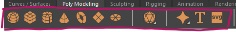
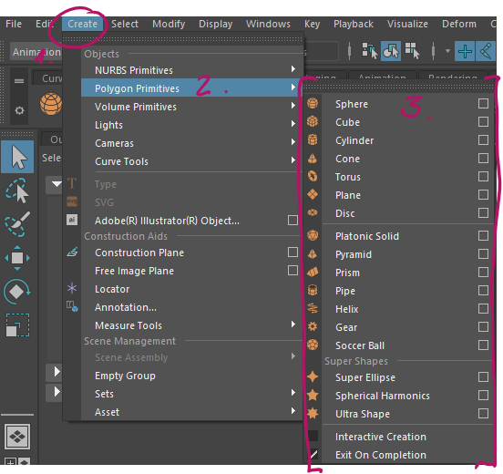
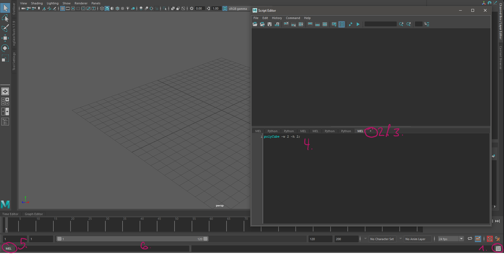
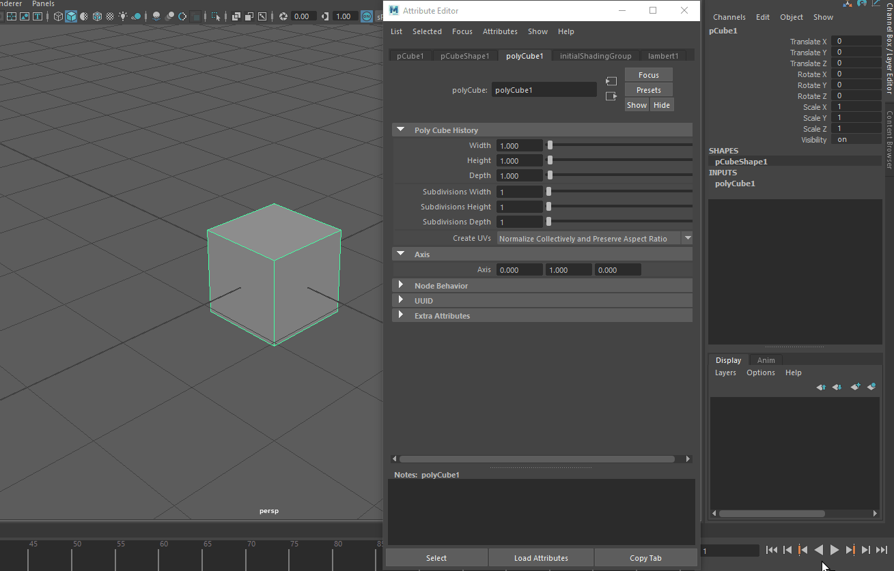

Working With Primitives¶
The easiest way to create 3D objects are primitives. Primitives are mathematically defined, parametrical objects like cubes, spheres, pyramids etc.
Primitives in Maya¶
Creating Primitives¶
There are 3 ways of creating primitives in Maya:
- The ‘Modeling’ shelf:
- 
Make sure the ‘Modeling’ shelf is visible. Most icons on this shelf are orange.
Click one of the primitives on the left part of the shelf.
- The main menu bar:
- 
In the ‘Modeling’ workspace, go to Create -> Polygon Primitives
Choose one of the many available polygon primitives. You will find that there are many more Primitives available than there were in the ‘Modeling’ shelf.
Maya will create the new primitives with default parameters at the world center.
Note
You can enable ‘Interactive Creation’ in this menu to edit the primitves dimesions while creating
- The command line / script editor:
- 
Open the script editor by clicking the script editor icon in the bottom right corner
Click the ‘+’ button to add a new script tab.
In the dialog choose ‘MEL’ to create a mel-script
Enter
`polyCube -w 2 -h 2;`to create a cube of width (-w) and height (-h) of 2
Note
You can also run this code by entering it in the commandline:5. Make sure the commandline mode is set to ‘MEL’6. Enter the code in the commandline and press Enter.
Note
As always, you can learn more about primitives, their parameters and usage in the official Autodesk Maya Manual: * Primitive Types and Options * Primitive Creation via menu * Primitive creation via shelf * Interactive creation
Editing Primitives¶
You can change a primitives parameters in the Attribute Editor or the Channelbox. A primitive in Maya consists of three different nodes ( we will learn about nodes later ). The primitive’s node is always called the same as their command. In case of polygon primitives, find the node prefixed by ‘poly’, for example ‘polyCube1’.
Warning
Maya does not allow to have any nodes in the scene share their name. It will always increase the suffixed number when creating nodes of the same type.
You can now edit a primitives parameters by typing values or by using the sliders. Advanced parameters will only be exposed in the Attribute Editor.
Note
Press ‘T’ after creating a primitive to call up a small floating dialog that lets you edit these parameters without finding the node